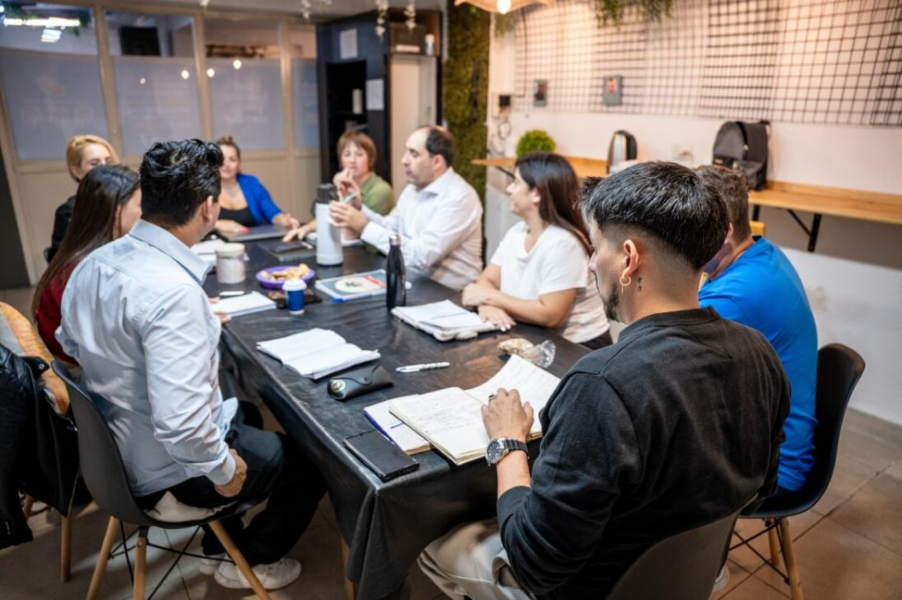

C·D·E
Programa de formación para líderes operativos
Capacitamos a tus Gerentes, Encargados y Responsables de área para que lideren con autonomía, criterio y resultados.

¿Para quién es este programa?
El CDE está diseñado para los gerentes, encargados y responsables de área de pymes de entre 2 y 30 empleados que necesitan liderar con más autonomía, criterio y resultados, para que el dueño deje de ser el cuello de botella.
¿Cómo transforma el CDE tu negocio?
El paso de una gestión centralizada y dependiente a un equipo autónomo.
Conexión con el ecosistema Fluir Negocios
El CDE es el tercer pilar fundamental de nuestro ecosistema. Se articula estratégicamente para sostener la transformación empresarial a largo plazo.
Objetivos del Programa
Perfil del Participante
Identificá qué perfiles de tu equipo se verán beneficiados por este entrenamiento práctico.
4 Semanas de Formación Práctica
El CDE se divide en 3 módulos clave condensados en 4 semanas de alta intensidad. Cada semana combina teoría aplicada, práctica guiada y tareas reales con tu propio equipo.
Módulos en Detalle
Un plan exhaustivo diseñado para trabajar la identidad y las herramientas prácticas del líder.
Metodología de Trabajo
El CDE está diseñado para pymes reales. Combinamos aprendizaje conceptual y soporte para una implementación exitosa.
Fichas de Sesión
Estructura detallada y entregables tangibles semana a semana.
Kit de Herramientas y Entregables
Un maletín de recursos editables y marcos conceptuales listos para aplicar desde el primer día.
Métricas de Éxito
El CDE no evalúa solo la satisfacción. Mide el impacto real en el negocio mediante KPI y registros.
Condiciones y Formato del Programa
Todos los detalles de cursada, horas de capacitación y modalidad de trabajo.
Materiales incluidos
Kit digital completo con PDF + plantillas editables.
Soporte constante
Grupo de WhatsApp exclusivo para feedback de tareas.
Seguimiento Post
Check-ins de 30 min a los 30 y 60 días del cierre.
Cómo Acceder al CDE
Un proceso de ingreso ágil, transparente y enfocado en el diagnóstico real.
Un equipo que lidera solo es el activo más valioso de una pyme.
Ayudá a tus encargados a crecer y convertí tu pyme en una empresa autónoma.
Escribinos por WhatsApp